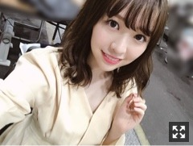
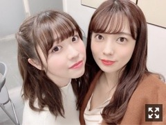

2019/0320Wedゴルゴンゾーラ
こんばんは。

幕張での全国握手会、
そして名古屋での個別握手会
共にお越し下さった皆様ありがとうございました
全握ではゆっちゃんとペアでした

日常フルで踊れて気持ち良かった〜。
個別握手会は
1.2部が1枚目のクリーム色のワンピース
3.4部

青のロングワンピース
色合い、生地感共にお気に入りです
5部

珍しく紫のようなピンクのような服

色とりどりのお花が本当に好きです
私のレーンに飾られるお花は
決まった色ではなくいつも色とりどりで
レーンを鮮やかにして下さっていて
それがとても嬉しく、お気に入りです。
シックな花の色の時もあれば
今回は可愛らしいお花が沢山でした。
毎度毎度新鮮で嬉しいです
お花を下さった皆様、ありがとうございます！
そしてみさ先輩の卒業ソロコンサートに
最後メンバーみんなで登場させて頂きました！
ドレス姿のみさ先輩、とっても素敵でした。
ここには書ききれない程、
沢山お世話になりました
みさ先輩と2人でお仕事する機会も何回かあって
それを歌いながら思い出していました、、
本当に、お疲れ様でした。
告知
○EX大衆 発売中
明日は名古屋で皆さんにお会いできますね
蓮加が「一緒ですね〜」って言ってくっ付いてくる
私は「はいはい」って言ってあしらうけど
本当は私も凄く嬉しい。笑
そして週末にはイベントもあります！
楽しみが満載。
みり愛
2019/03/20 20:06
コメント(391)
こんばんは╰(*´︶`*)╯♡
2期生、6周年おめでとうございます！
これからも微力ながら応援しております（╹◡╹）♡
2期生、6周年おめでとうございます！
これからも微力ながら応援しております（╹◡╹）♡
あのねっ！あのねっ！あのねっ！
・・・ゴルゴンゾーラ、今聴いたよ。
なかなかイイ感じの曲だねー♪
ゴルゴンゾーラも良いけど、モッツァレラも捨てがたい。
あと、みり愛ちゃん、けっこう声が大人っぽい
・・・ゴルゴンゾーラ、今聴いたよ。
なかなかイイ感じの曲だねー♪
ゴルゴンゾーラも良いけど、モッツァレラも捨てがたい。
あと、みり愛ちゃん、けっこう声が大人っぽい
こんばんは〜。
2期生の6周年おめでとう。と
ZIP春フェスお疲れ様でした。
ラベンダーティーは飲んだことないですね。
またチャレンジしてみますね。
2期生の6周年おめでとう。と
ZIP春フェスお疲れ様でした。
ラベンダーティーは飲んだことないですね。
またチャレンジしてみますね。
みり愛お疲れ。。
ZIP春フェス楽しかったよ。
みり愛のダンスパフォーマンスがみれて良かったです。
ちびっこ軍団、ちょこちょこしていて可愛かった。
じゃあね。
ZIP春フェス楽しかったよ。
みり愛のダンスパフォーマンスがみれて良かったです。
ちびっこ軍団、ちょこちょこしていて可愛かった。
じゃあね。
みり愛さま
おはようございます
昨日は2期生さんが
加入されて6年ですね
6周年おめでとうございます
いつもありがとう
これからも宜しくお願いします
7年目のこれからも
変わらずの思いで
応援しようと思っています。
お祝いが遅くなりまして
本当に申し訳ありませんすみません
月末の握手会に参加します
少々お伝えしづらいことを
お伝えしないといけなくなりました
またお会いしたときに
お話しが出来ると思うので
そのときに。
書いていたら日が替わってしまい
いつの間にか寝てしまっていました
久々のコメントでまとまりませんが
お許しくださいませ。
昨日は春フェスへの出演
お疲れ様でした
今朝その様子をニュースで観れ
お顔も見られました
楽しいライブになったようで
良かったです
長くなりましたが
明後日のミニライブも
楽しみにしていますので
頑張ってください
はやくあいたいです
お読みくださりまして
ありがとうございました。
よしたん♪
おはようございます
昨日は2期生さんが
加入されて6年ですね
6周年おめでとうございます
いつもありがとう
これからも宜しくお願いします
7年目のこれからも
変わらずの思いで
応援しようと思っています。
お祝いが遅くなりまして
本当に申し訳ありませんすみません
月末の握手会に参加します
少々お伝えしづらいことを
お伝えしないといけなくなりました
またお会いしたときに
お話しが出来ると思うので
そのときに。
書いていたら日が替わってしまい
いつの間にか寝てしまっていました
久々のコメントでまとまりませんが
お許しくださいませ。
昨日は春フェスへの出演
お疲れ様でした
今朝その様子をニュースで観れ
お顔も見られました
楽しいライブになったようで
良かったです
長くなりましたが
明後日のミニライブも
楽しみにしていますので
頑張ってください
はやくあいたいです
お読みくださりまして
ありがとうございました。
よしたん♪
2期生さん!6周年おめペロ!(o≧▽ﾟ)oニパッ
ラベンダー渡辺殿すちすち♡ピーナッツでばいころまるロンo(^-^o)(o^-^)oロンo(^-^o)(o^-^)oロン
ラベンダー渡辺殿すちすち♡ピーナッツでばいころまるロンo(^-^o)(o^-^)oロンo(^-^o)(o^-^)oロン
おはよう みり愛✨ (^ ^)
(^ ^)
改めて昨日は色々とお疲れさまぁ✨(^ ^)
昨日もメールをくれてありがとうね(^ ^)今日も今日とてそのメールの返事を書いたから送るけど、どうかひかないでよ〜？(^ ^)
おぉ〜↑(^ ^)
しゃぶしゃぶイコールお肉ではないけれど、豚汁大好き人間の僕に言わせてもらうと、豚汁に入っているお肉、中でも偶然にもミルフィーユ状になっているお肉がたまらなく好きなんだよね✨(^ ^)お肉は焼肉のように焼くのも良いけど、肉じゃがなんかのようなものに入っている感じのものも好き！焼いて良し煮て良し、だよ✨(^ ^)
改めて言うけど、昨日は愛する人を想いながら愛する人の為にお仕事をしていたよ✨(^ ^)というかこんなにも可愛過ぎる自撮りを見たら、もっともっと頑張れちゃうじゃん？？もぅ、らぶたんったら〜✨(^ ^)
我が主みり愛様を唸らせるとは…むむむ…！気になる〜♪(^ ^)美味しいお茶を見つけたら報告するね(^ ^)
というかみり愛、みり愛の可愛さは絶対的に完璧だな…！さすがはパーフェクトガールだわ…！みり愛になら自分の全てを捧げても、イイよ✨(^ ^)
改めて昨日は色々とお疲れさまぁ✨
昨日もメールをくれてありがとうね
おぉ〜↑(^ ^)
しゃぶしゃぶイコールお肉ではないけれど、豚汁大好き人間の僕に言わせてもらうと、豚汁に入っているお肉、中でも偶然にもミルフィーユ状になっているお肉がたまらなく好きなんだよね✨(^ ^)お肉は焼肉のように焼くのも良いけど、肉じゃがなんかのようなものに入っている感じのものも好き！焼いて良し煮て良し、だよ✨(^ ^)
改めて言うけど、昨日は愛する人を想いながら愛する人の為にお仕事をしていたよ✨(^ ^)というかこんなにも可愛過ぎる自撮りを見たら、もっともっと頑張れちゃうじゃん？？もぅ、らぶたんったら〜✨
我が主みり愛様を唸らせるとは…むむむ…！気になる〜♪(^ ^)美味しいお茶を見つけたら報告するね
というかみり愛、みり愛の可愛さは絶対的に完璧だな…！さすがはパーフェクトガールだわ…！みり愛になら自分の全てを捧げても、イイよ✨
Vの陣形か♡なの⊂(ο･㉨･ο）⊃”くまﾃﾞｽ…
ほんじつの空扉ありがとうございますﾜﾝ (･x･U)≡≡≡３
ほんじつの空扉ありがとうございますﾜﾝ (･x･U)≡≡≡３
おはよっ(^ ^)
みり愛…
みり愛あああああ
好きだ…！大好きだ…！みり愛っ！
みり愛あああああ
好きだ！好きだ！好きだ！好きだ！好きだ！好きだ！好きだ！好きだ！好きだ！好きだ！好きだ！好きだ！大好きだー！うおおおおお(>_<)！
みり愛あああああ
愛してる！愛してるよー！うぅあああああ(>_<)！
みり愛あああああ
みり愛みり愛みり愛みり愛みり愛みり愛みり愛みり愛みり愛！みり愛ー(>_<)！
あああああ(>_<)
みり愛あああああ(>_<)！
愛してるよ…らぶ…✨(^ ^)ぎゅっううううう
「愛してる。」
今日もまた一緒に✨一緒に✨頑張ろうねー✨(^ ^)
みり愛…
みり愛あああああ
好きだ…！大好きだ…！みり愛っ！
みり愛あああああ
好きだ！好きだ！好きだ！好きだ！好きだ！好きだ！好きだ！好きだ！好きだ！好きだ！好きだ！好きだ！大好きだー！うおおおおお(>_<)！
みり愛あああああ
愛してる！愛してるよー！うぅあああああ(>_<)！
みり愛あああああ
みり愛みり愛みり愛みり愛みり愛みり愛みり愛みり愛みり愛！みり愛ー(>_<)！
あああああ(>_<)
みり愛あああああ(>_<)！
愛してるよ…
「愛してる。」
今日もまた一緒に✨
みり愛ちゃんこんにちは❗
ZIP春フェス2019お疲れさま〜！
朝の番組拝見したよ(^^)
水色の歌衣装でパフォーマンスするみり愛ちゃん素敵だったよ！
あごのせも可愛いかった〜(^^)
僕も地面に落ちている桜の花びら見かけたよ
う〜、なんて儚いんだ(><)
なんとか早いうちにお花見行かなくては(^^;
大阪全握僕は行けないけどみり愛ちゃん楽しんでね！
みさちゃんとは最後の日だよね(;;)
みり愛ちゃん楽しい思い出作ってね！
ZIP春フェス2019お疲れさま〜！
朝の番組拝見したよ(^^)
水色の歌衣装でパフォーマンスするみり愛ちゃん素敵だったよ！
あごのせも可愛いかった〜(^^)
僕も地面に落ちている桜の花びら見かけたよ
う〜、なんて儚いんだ(><)
なんとか早いうちにお花見行かなくては(^^;
大阪全握僕は行けないけどみり愛ちゃん楽しんでね！
みさちゃんとは最後の日だよね(;;)
みり愛ちゃん楽しい思い出作ってね！
ゴルゴンゾーラ聴きましたでっ♪
歌声がめっちゃかわいい～
歌声がめっちゃかわいい～
みり愛ちゃん、こんばんは！
遅くなってしまいましたが、
2期生の6周年おめでとう！！！
ゴルゴンゾーラも聴きましたよー！
良い曲ですね。
どこかで披露されるのを観たいですっ！！
ではでは、明日の握手会楽しんできてくださいね～
遅くなってしまいましたが、
2期生の6周年おめでとう！！！
ゴルゴンゾーラも聴きましたよー！
良い曲ですね。
どこかで披露されるのを観たいですっ！！
ではでは、明日の握手会楽しんできてくださいね～
「オーアイニー」
みり愛ちゃんよるよい✋
今日もお疲れ様食欲がないって言ってたけど大丈夫かな？体調留意しててくださいな☺️
桜の花びらお裾分けありがとう私の方でもあちこちで咲いていますよただ仕事があわただしく残念ながらお花見には行けてないです
エムオンさんで台北公演拝見しましたよ急な出演でしたがわりと前面での歌唱があった様でみり愛ちゃん画面にたくさん映っていました
梅ちゃんカメラさすがのチーム☆他の先輩方とは扱いが違う(笑
あの挨拶明日の握手会でもやってみたらどうかな？みり愛ちゃんのファン倍増するって思います
明日の握手会と言えば衛藤さん乃木坂最終活動日又全国握手会としてはゆっちゃんとかりんちゃんが最後ですね春休み期間中でもありますから多くのファンが来場されることでしょう
衛藤さんは握手会やアンダー活動の大切さを常に意識され活動続けられていました選抜に定着してからも後輩達を気にかけられていてみり愛ちゃんも助けて頂いたこと多分にあると思います
握手会終了後に卒業セレモニーみたいなのがあるだろうと思います感謝の気持ちを胸に秘め満面の笑顔で送り出しましょうね☺️
もちろんご承知の通り明日私は参加は出来ませんご来場の皆さまと楽しんでくださいね(まいちゅんがパートナーだから大丈夫でしょうけどね☆)
ではおやすみなさいませ～
みりり委員会 3700番 凌@焼もみじ
おはよう〜。
モバメありがとう。
空写真、花写真ありがとうです。
空と海が似た色で水墨画っぽいですね。
大阪の握手会がんばってくださいね。
終わったら、いっぱい美味しいもの食べて
疲れ癒して下さいね。
モバメありがとう。
空写真、花写真ありがとうです。
空と海が似た色で水墨画っぽいですね。
大阪の握手会がんばってくださいね。
終わったら、いっぱい美味しいもの食べて
疲れ癒して下さいね。
M-ONで乃木坂46meets asia 台北ver.観ました⊂(ο･㉨･ο）⊃”くまﾃﾞｽ…
台北の渡辺殿もきゃわわうれぴーぽーo(￣◎￣)o ﾊﾞﾌﾞｩ♡
舞台裏♡モグモグtime♡ワンタン麵♡文鳥さん占い♡がんばりまっちゅん♡言霊砲♪制服のマネキン♪よきよきピーナッツでばいころまるロンo(^-^o)(o^-^)oロンo(^-^o)(o^-^)oロン
台北の渡辺殿もきゃわわうれぴーぽーo(￣◎￣)o ﾊﾞﾌﾞｩ♡
舞台裏♡モグモグtime♡ワンタン麵♡文鳥さん占い♡がんばりまっちゅん♡言霊砲♪制服のマネキン♪よきよきピーナッツでばいころまるロンo(^-^o)(o^-^)oロンo(^-^o)(o^-^)oロン
きれいです
チャァオ～～!☆彡
可愛いぃ～～～⤴️⤴️⤴️❕
可愛いぃ～～～⤴️⤴️⤴️
大好き過ぎるみりちゃま～～こんにちは～～～⤴️⤴️❕❤️❤️❤️❤️❤️笑顔
今日いい天気だねぇ～～⤴️⤴️⤴️❕❤️❤️❤️❤️❤️笑顔
おいらはきのう会社の飲み会で
雨にあたり過ぎて、今日頭痛風邪です❕
やばい明日はおいらは、休みだけど～～⤴️⤴️
会社の健康診断が朝イチからです❕
半日は、かかるかなぁ❕❔
あぁ❕・・・・今日工事中の日だぁ❕❤️❤️❤️❤️❤️笑顔
ずっと、おいら～～⤴️⤴️
姪っ子のように～～⤴️⤴️・・・
かわゆいみりちゃまがぁ～～～⤴️⤴️⤴️・・
選抜入りする事を、祈っているの❕❤️❤️❤️❤️❤️笑顔
はあぁ～～～(ため息)・・
番組いつ選抜発表なんだろ～～⤴️⤴️❕❔❤️❤️❤️❤️❤️笑顔
・・・
それでは、大好きなぁみりちゃま頑張ってねぇ❕❤️❤️❤️❤️❤️笑顔
またねぇ❕❤️❤️❤️❤️❤️笑顔
☆大人しい、おすまし！より☆彡
沖縄いいとこ～なの⊂(ο･㉨･ο）⊃”くまﾃﾞｽ…
乃木坂工事中♡沖縄ツアーの回観ました。アイドルスマイル沖縄渡辺殿もきゃわわうれぴーぽーo(￣◎￣)o ﾊﾞﾌﾞｩ♡ぐるぐるバット波打際30M走♡一番〇〇な人フォト選手権‼すぎょい!面白かったでふ(笑)d(・(ェ)・d)☆very good☆(b・(ェ)・)b
乃木坂工事中♡沖縄ツアーの回観ました。アイドルスマイル沖縄渡辺殿もきゃわわうれぴーぽーo(￣◎￣)o ﾊﾞﾌﾞｩ♡ぐるぐるバット波打際30M走♡一番〇〇な人フォト選手権‼すぎょい!面白かったでふ(笑)d(・(ェ)・d)☆very good☆(b・(ェ)・)b
今日は愛する人からのメールに想うことがあって涙が出た…
愛してるよ…らぶ…✨(^ ^)ぎゅううううう✨
愛してるよ…らぶ…✨
みり愛あああああ
四字熟語…じゃ…ないだと…!?
いや四字熟語なのか…?もう飽きたのか…?
なんかおねぇさんになったなぁ(/_;)(愁)
いや四字熟語なのか…?もう飽きたのか…?
なんかおねぇさんになったなぁ(/_;)(愁)
チャァオ～～!☆彡
みりちゃまぁ～～～⤴️⤴️❕❤️❤️❤️❤️❤️笑顔
新年号、令和になったねぇ～～⤴️⤴️⤴️❕❤️❤️❤️❤️❤️笑顔
みりちゃまは、どんな感じに受け止めましたかぁ❔❤️❤️❤️❤️❤️笑顔
おいらは普通に、何もなくさらっと
すんなり受け止めました❕笑顔
・・・
今日おいらは代休で、さっき～～～⤴️⤴️
ペットショップにいき、念願かなって
飼いたかった1メールほどのワニを購入しました❕笑顔
今は水槽がないので、部屋に放し飼いにしています❕
部屋の中をうろうろしたあと、隅っこでじっとしています❕笑顔
さっきお昼寝しようと、ワニちゃんの体を枕にしたら～～⤴️⤴️
もろに、かじられました❕
ちょっと、血だらけです❕泣
・・・・・
・・・・
みりちゃまぁ～～～⤴️⤴️⤴️・・
すいません、冗談です❕❤️❤️❤️❤️❤️笑顔
嘘です、ワニは❕❤️❤️❤️❤️❤️笑顔
あの、今日エイプリルフールですから～～⤴️⤴️❕❤️❤️❤️❤️❤️笑顔
みりちゃま、許してねぇ❕❤️❤️❤️❤️❤️笑顔
それでは大好きなぁみりちゃまお花見してリフレッシュして
お仕事頑張ってください❕❤️❤️❤️❤️❤️笑顔
またねぇ❕❤️❤️❤️❤️❤️笑顔
☆大人しい、おすまし！より☆彡
うそうそ!愁いてない!むしろ嬉しい!ゆうてね…
ていうか、ゴルゴンゾーラ知らんかった…最高かよ!!!神かよ!!
にわかっぷりがひどいぜ…
ていうか、ゴルゴンゾーラ知らんかった…最高かよ!!!神かよ!!
にわかっぷりがひどいぜ…
みり愛ちゃん
お疲れ様です
いつもモバメありがとう
セーラームーンのブルーレイ届いていたのを観ました、特典映像とか良かったですよ
演者の皆さん仲良しで楽しそうですね‼️
あと、
アルバムの個握は幕張のみですが行きますね
みり愛ちゃんの笑顔や何気ないひと言で
自分はいつも救われています
みり愛ちゃんありがとう
今日も、
風船は生きているを聴いて寝ます
( ´ま`)まぁーさん
でした
お疲れ様です
いつもモバメありがとう
セーラームーンのブルーレイ届いていたのを観ました、特典映像とか良かったですよ
演者の皆さん仲良しで楽しそうですね‼️
あと、
アルバムの個握は幕張のみですが行きますね
みり愛ちゃんの笑顔や何気ないひと言で
自分はいつも救われています
みり愛ちゃんありがとう
今日も、
風船は生きているを聴いて寝ます
( ´ま`)まぁーさん
でした
みり愛ちゃんおはよう❗
お仕事で忙しくしているのかな？
でもモバメ送れなかったとかは気にしないでね〜
写真のお裾分けありがとう(^^)
大阪の臨海部が写っているのかな？
空の表情も素敵だー(^^)/
乃木中観たよー！
みり愛ちゃんの跳ね具合めっちゃ良かったー！
このまま斜め上に飛んでいきそう(笑)
純奈のブログも観たよ
みり愛ちゃんと純奈近くてドキドキ(笑)
お仕事で忙しくしているのかな？
でもモバメ送れなかったとかは気にしないでね〜
写真のお裾分けありがとう(^^)
大阪の臨海部が写っているのかな？
空の表情も素敵だー(^^)/
乃木中観たよー！
みり愛ちゃんの跳ね具合めっちゃ良かったー！
このまま斜め上に飛んでいきそう(笑)
純奈のブログも観たよ
みり愛ちゃんと純奈近くてドキドキ(笑)
おはよう〜。
大阪の握手会お疲れ様でした。
写真のお裾分けありがとうです。
夕暮れかな。暗いというよりも
青いって感じで、綺麗ですね。
しっかり休んで下さいね。
大阪の握手会お疲れ様でした。
写真のお裾分けありがとうです。
夕暮れかな。暗いというよりも
青いって感じで、綺麗ですね。
しっかり休んで下さいね。
ほんじつの空扉ありがとうございますﾜﾝ (･x･U)≡≡≡３
夜ご飯はマーガリン入りバターロールですたよばいころまるロンo(^-^o)(o^-^)oロンo(^-^o)(o^-^)oロン
夜ご飯はマーガリン入りバターロールですたよばいころまるロンo(^-^o)(o^-^)oロンo(^-^o)(o^-^)oロン
みりぃ、愛〜↑✨
みり愛ちゃん、こんばんは～♪
昨日のお裾分けの景色、
いい感じの青ですね。
遠くに見える山の端もきれい！
私は明日は、早朝から福島行ってきます！
寒いのかな？？
アルバムやシングルの発売が
相次ぐので、いろいろと
忙しいとは思いますが、
頑張ってくださいねー！
応援しています！！
昨日のお裾分けの景色、
いい感じの青ですね。
遠くに見える山の端もきれい！
私は明日は、早朝から福島行ってきます！
寒いのかな？？
アルバムやシングルの発売が
相次ぐので、いろいろと
忙しいとは思いますが、
頑張ってくださいねー！
応援しています！！
昨日はいつもより少しだけ時間があったからこのメールの返事を書いて送ったけど、改めて送ります。
今日（昨日）もまた、愛する人を想いながらお仕事に励んでいるよ〜✨(^ ^)
愛してるよ✨らぶ✨(^ ^)
今日もおやすみまで一緒に✨一緒に✨頑張るぞ✨なあみり愛✨(^ ^)ぽむぽむ✨
「愛してる。」
今日（昨日）もまた、愛する人を想いながらお仕事に励んでいるよ〜✨
愛してるよ✨
今日もおやすみまで一緒に✨
「愛してる。」
シュークリームです⊂(ο･㉨･ο）⊃”くまﾃﾞｽ…
整体スッキリ渡辺殿♡よきよきピーナッツでばいころまるロンo(^-^o)(o^-^)oロンo(^-^o)(o^-^)oロン
整体スッキリ渡辺殿♡よきよきピーナッツでばいころまるロンo(^-^o)(o^-^)oロンo(^-^o)(o^-^)oロン
みり愛さん、こんにちは
お久しぶりです
たくさんモバメを送ってきてくれたのに、コメントを返せなくてごめんなさい
自分は体調を崩していました
頑張って働くことだけで精一杯でした
短い文章でのコメントなら返せましたが、それでは手抜きになってしまうので、書かないほうがマシだと判断しました
自分は病を抱えているので、365日の中で元気な日は3分の2ぐらいだったりします 笑
だから、急にいなくなってしまうことがありますが、少し時間が経てば戻ってくるので
なんというか、ごめんなさいね 笑
お久しぶりです
たくさんモバメを送ってきてくれたのに、コメントを返せなくてごめんなさい
自分は体調を崩していました
頑張って働くことだけで精一杯でした
短い文章でのコメントなら返せましたが、それでは手抜きになってしまうので、書かないほうがマシだと判断しました
自分は病を抱えているので、365日の中で元気な日は3分の2ぐらいだったりします 笑
だから、急にいなくなってしまうことがありますが、少し時間が経てば戻ってくるので
なんというか、ごめんなさいね 笑
おーはよっみり愛✨(^ ^)
はあああああ！今日も今日とて可愛いっ！相も変わらず可愛過ぎるっ！世界で一番可愛いよ✨(^ ^)
お仕事、頑張るからね♪(^ ^)
愛してるよ✨らぶ✨(^ ^)
はあああああ！今日も今日とて可愛いっ！相も変わらず可愛過ぎるっ！世界で一番可愛いよ✨
お仕事、頑張るからね♪(^ ^)
愛してるよ✨
みり愛ちゃんこんばんは❗
みり愛ちゃんお仕事忙しいみたいだね！
でも応援しているよ
頑張れー(^^)/
でもそんな中でもせっかく綺麗に咲いている桜愛でる時間があるといいなあ！
今日は天気もいいし僕もお仕事してるのがもったいない(^^;
でも休憩中に観た桜綺麗だったなあ
花びらの裏から日の光が当たって透き通って見えるのがなんとも美しかったなあ
日本人に生まれて良かったなって思える瞬間です(笑)
乃木中沖縄ロケ、引き続き楽しみ(^^)
でもみり愛ちゃん、ビーチや眩い日光というシチュエーション
あまり得意でないのかな？(笑)
みり愛ちゃんお仕事忙しいみたいだね！
でも応援しているよ
頑張れー(^^)/
でもそんな中でもせっかく綺麗に咲いている桜愛でる時間があるといいなあ！
今日は天気もいいし僕もお仕事してるのがもったいない(^^;
でも休憩中に観た桜綺麗だったなあ
花びらの裏から日の光が当たって透き通って見えるのがなんとも美しかったなあ
日本人に生まれて良かったなって思える瞬間です(笑)
乃木中沖縄ロケ、引き続き楽しみ(^^)
でもみり愛ちゃん、ビーチや眩い日光というシチュエーション
あまり得意でないのかな？(笑)
本開催から少し空いて、みり愛さんが参加したようやく台北ライブが放送されましたが、
盛り上がりも日本と同じで、やはりライブ会場に国境は無い様に見えました！
ステージからの景色は如何でしたでしょうか？
海外選抜は人数もちょうど良いのでカメラワークも忙しくなくて見易く、よく抜かれてたのが嬉しいですね！
裏舞台での”美波さん視点でのみり愛さん”の可愛いやり取りと、二人の仲の良さに微笑ましくなりました。
チームSTARの魂は健在でしたね！
盛り上がりも日本と同じで、やはりライブ会場に国境は無い様に見えました！
ステージからの景色は如何でしたでしょうか？
海外選抜は人数もちょうど良いのでカメラワークも忙しくなくて見易く、よく抜かれてたのが嬉しいですね！
裏舞台での”美波さん視点でのみり愛さん”の可愛いやり取りと、二人の仲の良さに微笑ましくなりました。
チームSTARの魂は健在でしたね！
チャァオ～～!☆彡
みりちゃまぁ～～～⤴️⤴️❕❤️❤️❤️❤️❤️笑顔
みりちゃまぁ～～～⤴️⤴️❕❤️❤️❤️❤️❤️笑顔
みりちゃまぁ～～～⤴️⤴️❕❤️❤️❤️❤️❤️笑顔
純ちゃんブログの、みりちゃまぁ～～～⤴️⤴️⤴️・・
めたんこ～～～⤴️⤴️⤴️・・・
テラ可愛いぃ～～～⤴️⤴️⤴️ぞぉ～～～～⤴️⤴️⤴️❕❤️❤️❤️❤️❤️笑顔
(テラ・・ギガの上だよ～～～⤴️⤴️❕❤️❤️❤️❤️❤️笑顔)
☆大人しい、おすまし！より☆彡
みり愛あああああ
みり愛あああああ
ううううう(>_<)
あああああ(>_<)
みり愛あああああ(>_<)！
みり愛っ…(>_<)！
愛してるよ✨らぶ✨(^ ^)
ううううう(>_<)
あああああ(>_<)
みり愛あああああ(>_<)！
みり愛っ…(>_<)！
愛してるよ✨
みり愛さん、こんばんは
自分は今日、昼食は焼き鳥丼
夕食はインスタントカレーを食べましたよ
今日は仕事が休みで、久しぶりにTVゲームをしてました
目が痛くなりました 笑
あと、蓮加ちゃんののぎおびshowroomも見ました
自分は今月も握手会には行けません
でも、みり愛さんのファンは自分１人ではないですから
会いに来てくれた人達と握手会を楽しんでくださいね
それでは、おやすみなさい
自分は今日、昼食は焼き鳥丼
夕食はインスタントカレーを食べましたよ
今日は仕事が休みで、久しぶりにTVゲームをしてました
目が痛くなりました 笑
あと、蓮加ちゃんののぎおびshowroomも見ました
自分は今月も握手会には行けません
でも、みり愛さんのファンは自分１人ではないですから
会いに来てくれた人達と握手会を楽しんでくださいね
それでは、おやすみなさい
あいしてるから


ZIPフェスお疲れ様
もうすっかり春ですね。暖かい。
仕事がひと段落したので久しぶりのコメント。
メールで着てる服、可愛いし大好きやった。
アルバム握手会は行くのでよろしく